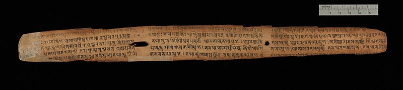

The Sanskrit word Aavahan roughly translates to “Invocation”, albeit a much wider abstraction. Aavahan is a marathon ritual of meditation and sacrifice - to instantiate superior powers within oneself . To a follower, it appears as if you are broadcasting an intense call to action, but internally, you resolve to act yourself - alone as an active medium - akin a channel that invokes the force. In Hindu tradition, one of the three primal forces - Bramh, Vishnu or Siva are invoked before taking on uphill endeavours. For example Rama, before making a bridge over the sea, invoked Siva.
Scribing Mahabharata was one such venture. In terms of significance, it was probably as big a shift as the computing revolution of late last century. For example, the idea of transcription 1 was to Mahabharata, the way coding was to an operating system 2. Just as computers transformed every aspect of life - personal, social or business - through digital flow of information - and are now redefining the very foundation of value exchange ; the written word rewired then existing social, political and fiscal fabric - a multilateral 3 economic system took shape beyond one on one barter. The ground work for that tectonic shift started much earlier.
It included ..
-
improvements in the language model to support scribing. For example, there was no concept of punctuation in the “speech only” world -> The written language needed a stronger syntax.
-
extension of phonemes to capture the true essence of spoken sounds. Cave scribing was mostly pictorial and thus inefficient to convey abstract ideas.
Vaidik Sanskritwas expanded to accommodate around eighty sounds. -> Abstraction is key to expanding the thought. Thought is the virtual environment of first order. -
development of writing apparatus such as palm leaves, ink, and quills. The apparatus must be easy to handle for mass adoption; and the print must last longer than a life-span. The simple argument was - if a script didn’t last longer than a human life than the effort was pointless - the writer could very well speak the ideas when needed -> Persistence is a requirement of storage. Storage leads to perpetuity.
-
triggering a self sustaining and censor resistant pay back model around scribing. Yes, “scribing” was declared downright demonic ! Many reciters believed wisdom could never be locked in written symbols. Fears were not misplaced though - they could see a more versatile variant of humans on the horizon -> Think about all the brouhaha we have around AI safety these days ! 4.
-
and the patience to write long meaningful text. But more importantly, finding a purpose to scribe - a root reference narrative that would span ages without losing it’s luster and relevance.
No one could fathom to what avail but the cause appeared worth dedicating many lives. Thousands of scribes would spend millions of hours just to copy, rewrite and improve the open root narrative just as Unix morphed into BSDs, Solaris, AIX, HP-UX, Minix, Linux and Android and many more including countless variants of each. With them they all carried forward what is commonly known as Unix philosophy - somewhat like an embodiment of universal values that bind all of them into one single rendition.
As described in the very first book of Mahabharata (Adi Parva), the Vaidik editor-in-chief (Ved-Vyasa), sage teacher of all the races 5, immortal Krishna Dwaipayana invoked Bramha - the embodiment of all pervading information, to accomplish the pursuit of Mahabharata - to capture universal values into a single historical narrative. The idea of abstracted thought , henceforth, would percolate beyond races, geographies and cultures to define a datum for humans. All future ideologies (subsequently religions and faculties of science) must have a treatise as a founding stone - Gita , Bible, Quran, Physica, Principia, Relativity - and hundreds of more.
Mahabharata was the birth of operating scripture !
Aavahan
Krishna Dwaipayana was destined to compile thousands of sacred insights from sages (Rishies) - old and new. He catalogued, their spoken wisdom into four foundational volumes - the Vedas. For this legendary work, he was conferred the coveted title in literature - Ved Vyasa (the chief editor of Vedas).
This work, in itself, was virtuous enough to dedicate many lives; though Dwaipayana was just getting started ! He was waiting for a divine 6 trigger. His purpose was to welcome the full-incarnation 7 of Vishnu, understand the wisdom ‘as is’, and preserve it in human mind through one of the most potent narrative ever told - Bhagvat Gita.
As a complimentary gift, to ensure everyone had a fair access, he ushered the humanity from spoken word to the written text - a new experiential universe of narratives. It was like commissioning the hyper text internet of that time. The immensity of his purpose, rightfully so, made him one of the immortal-eights 8 in Hindu tradition.
Dwaipayana's literary work was no accident. He came from a lineage of scholarly sages. His father Maharishi Parāśara spoke titles such as
Krishi Parāśara— The science of Agriculture;Vrkayurveda— Insights into Botany;Vishnu Purana9 — Stories ofVishnu;Brihat Parāśara Hora— foundational work on Astrology;
His grand father Sakti Muni, was first to comprehend eternal Karmyoga - the nature of rise of conciousness (Vishnu). And his great grand father Vaśiṣṭha was titled Bramhrishi - the first guardian of spoken wisdom.
Dwaipayana's lineage predetermined the responsibilities of his investiture - as if destiny panned a multi-generational charter. And it wasn’t an accident !
0.1
With written word, not only did we get on-demand access to immutable information, the storage capacity too got a massive boost. Library of Alexandria, in early days of transcription (around 3rd century bc built by Ptolemy), presumably had 70,000 to 700,000 Papyrus rolls. A conversion into a modern textbook size should end up to say 200,000 books - a lot, given they were all hand written and carefully transported to Alexandria, but from today’s standpoint, it is only a terabyte of disc space. Something that might fit on thumb size SD card !
With digital medium, we inoculated our information store with third booster. It is estimated there are over 130 million books in existence as of 2021. Internet is still in its infancy, somewhat like Library of Alexandria was to the “Papyrus” world. As of 2021, there were over 1.83 billion websites. The amount of data stored on the internet is estimated to be in the zettabyte range. One zettabyte is equivalent to a billion Terabytes. Which means, it is already more than a billion libraries of Alexandria.
Add to it the offline storage we have in our cell phones and computers. Assuming a standard textbook is ~5 Mb of data, a Terabyte of storage - a normal laptop these days - may accommodate 200,000 books -> You and me carry a library of Alexandria in our backpacks.
The comparison above is certainly not ‘apple to apple’ because data on the internet (and on our computers) contains machine logs, code, graphics and hundreds of other formats but the point really is to show case our external memory heap grew almost a billion times in a span of five thousand years. And this pace is only increasing. As of now we are doubling the internet as well as offline storage in our gizmos, every two years. In nutshell, we are now at a point that no human could ever read all the books in print, much less the content stored on internet -> Hence the rise of the tools such as search engines or large language models. In essence a new paradigm of digital conscious experience 10 is around the corner - just the way written word led to an exponentially vast concious experience versus the spoken sphere.
In hindsight, the idea of “text” was profound, with far reaching implications. It was a quantum jump in progression of consciousness. It enabled us send information to the future -> an attempt to conquer time, just the way a “wheel” was an attempt to cover physical space. Oddly enough no other species adopted either wheel or text.
The primary difference between humans and other species is our ability to store information outside the evolutionary mechanism. Animals and plants adjust to changing conditions through slow evolutionary cycles. Humans, on the other hand, adapt quicker because we harness knowledge from our vast zettabyte store of information.
Karmais the action that transitions information into knowledge 11.Vipreet Karma(opposite ofKarma) - also calledVikarma, are the actions that convert knowledge into information. For example when we practice daily to improve our game, it isKarma. On the opposite side, when we play a match to put our skills on display, it is calledVikarma. WithKarmawe ingest information ; withVikaramawe radiate information. Both are equally important - like two wheels of a cart.A set of predefined
Karmaspracticed consistently is calledYazna.Yaznaleads to success (Siddhi). For example when you study eight hours a day for say eight long years you become a successful doctor. Same is true for an Engineer, a Scientist, an Economist and thousands of other specializations . The daily ritual of study (and lab) in this case isYazna.Yaznabecomes effective when performed alone and without the influence of worldly desires. When such fine tuned skills are used effectively, they become source of inspiration for the rest -> thus initiating a virtuous cycle ofKarmaandVikarma.
You may argue other species too sustain information and they do turn it into knowledge. For example a dog may hide a bone and he knows how and when to retrieve it back. Bees make beehives to store honey. Elephants remember the river even after hundreds of years. The difference, however, is not only the “size and scope”, it is also in persistent nature of our storage. In case of humans the external store of information is vast, shared and is well documented. The last part is important - being documented makes it asynchronously available. It is as if a teacher is always with us - in our books. The recipes of success are available to us in written format. And they are timeless - means Pricipia written in 1687 by Newton is available to us in 2024. No other species has this timeless information except in evolutionary code.
The written word, however, was NOT the first quantum jump. The first was when we designed first spoken language and enabled barter system of value-exchange based on authenticity of spoken word. Just like spoken word, the value-exchange was synchronous. One must have a Ser of copper to trade with say 100 Ser of wheat - then and there. The deal had to be “as is” - full and final. With written word, information could be asynchronous. One could write something for consumption of future generations. On the same lines the value-exchange became asynchronous. One could trade a Ser of copper with a Tola of gold and later as needed a Tola of gold could be traded for say 50 Ser of wheat and fifty Ser of rice by her grand kids. In essence, value-exchange model always inherits the properties of communication mode.
It may take a while for value-exchange method to catch up with new modes of communication - sometimes even centuries - but it always does. Because information has no value unless the value exchange model catches up. For example, before internet, books; music and video; had a price tag. Once we had a practically free mode to copy and communicate, the value of information fell exponentially. In essence internet needs a new method to stream value just the way we stream video or music. The selection of gold as a facilitator for value-exchange, too was not immediate. It took a journey of it’s own to arrive at this consensus. The reason gold was the best measure - it actually took as much effort to mine a Tola of gold as a Ser of copper or 100 Ser of wheat. All the exchanges were carefully calibrated and adjusted to enable them stand the test of time. Gold was perfect fit because it was scarce and hard to mine. No one could flood the system with gold as they could do with copper or iron - even silver. More importantly, it could be easily transported versus copper, iron or commodities such as wheat. Portability and scarcity made it desirable. Thus natives of “Golden Sparrow” graciously adopted gold as jewellery. And they adorned themselves and their deities with gold. Notably, gold had no other use. It was pure “store of value” to facilitate value-exchange.
Enabling timelessness (asynchronous nature) was never free. It needed huge effort to scribe spoken words. Similarly massive amount of effort went into mining and minting golden
RattiesandTolas. It was deemed as fair cost of perpetuity - and flexibility.
The limitation, however, persisted when it came to space. No one could move gold faster than the fastest horse available at the time. The limitation was similar on the written word though small messages could be sent through pigeons. It took us more than five thousand years to solve the problem of space. With internet we are now able to send information at the speed of light. Which means our value-exchange system should follow the suite - of course without losing the properties of Gold. Bitcoin, though in early stages of it’s hyperadoption, is the solution to move value through space at the speed of information - at the speed of light.
From value-exchange perspective, we conquered the time through gold and we are getting better on space with bitcoin. But even then we are limited by speed of the light. In physical universe we must obey the laws of physics. There is only one thing that isn’t constrained by physical laws - Thought.
Thought is the first order of virtual. Thought exists in virtual constructs (situations) that look like like our physical world but they are beyond our sensory perception of touch and feel. We call it imagination or a dream - yet it must have a narrative. In fact a thought is a narrative that is beyond our current scope of space and time - it exists in our minds. We can express it verbally but if you want to be really effective you tend to construct it in a scribed narrative.
From a concious experience standpoint, the scribed narratives are somewhat limited versus the real experience. They need vicarious indulgence of the reader. With new technology we can turn the narrative into an immersive experience that feels like our real world. This experience is bound to improve exponentially. Which begs the question if our real world is real or virtual ! If it is then we are obviously exchanging value beyond speed of light. How did we beat speed of light for value-exchange ? Vaidik science believe Karma is the way to transcend value beyond constraints imposed by physical laws. How ? - we will try to explore through this narrative though the idea was first documented by Dwaipayana in the first set of written words - Bhagwat Gita - A piece of divine information he wanted to make accessible to all humans.
0.2
The shared external storage of information leads to notion of a “civilization”. A civilization surrounds itself around a core rational and written down information-base. It develops an ecosystem of physical and spiritual tools (through Yazna) that enhance the life experience of it’s participants. For example - the first civilization was built around Vaidik science, Greco-Romans were founded around the work of Homer and thrived around likes of Socrates, Plato, Heraclitus, and Aristotle. The rise of Europe was around the Industrial application(s) of modern science, and now America is broadly reaping the digital wealth of information technology. All of them invented tools to enhance conscious experience based on well documented scriptures or scientific method.
The enhanced 12 life experience is nothing but upwards progression of consciousness. Not only does it improve the average longevity, it also adds to what we explore per unit of time. Fifty years in twenty first century is a much richer experience than fifty years of the first century ! Through simple extrapolation, one can imagine how rich experiences humans of say 30th century will have! They may be able to carve out real experiences - to live, play and learn in them - on demand. Who knows if we are living in a meta real narrative of our future selves to explore a specific paradigm - to answer questions of our own future !
Since the “external store of information” drives human world (civilization) it would be worthwhile to look at it’s inner constructs. Tiny threads of information are held with in inter-connections of the participants - among each others with in humans, and with other animate beings as well as inanimate things - a network of almost infinite proportion. The information flows in the “network” peer to peer - without any central agency. Since there is no central governance, the conscious experience degenerates if the flow is hindered - unless a properly stored chain of information is accessible on demand. Such a chain is called “history”. History provides the context to conscious experience. Longer and nuanced history leads to compelling experiences. No wonder Dwaipayana chose to document the history of first civilization in Mahabharata.
Any type of “Storage” , has a definitional property - asynchronous nature (or on-demand availability). For example, as long as the current keeps flowing in the grid, it is just “Electricity” but the moment it becomes available on demand (for later consumption), we call it a “battery”. The way a “battery” is storage for electricity, a book is storage of information. Thanks to the work of Dwaipayana, we have pristine tools for storing the information - text.
But text alone is not sufficient. It must be expressed in a narrative that catches human attention. The way a battery has two opposite poles - a Cathode and an Anode , a narrative thrives with in two opposite characters. A hero and a villain - good verses evil - right verses wrong. While morality is subjective, the polarisation makes it a compelling read. A good narrative stays away from the absolutism - it well justifies the villain as much as it celebrates the hero because both are equally important from storage perspective. And such a balanced deliberation reaches deep into both sides of the isle - good or bad.
A “Narrative” has the ability to keep the broken connections alive. A good narrative has the power to revive the connections and to form new ones. We can form real neural connections with the characters of a well constructed narrative. The entirety of all the connections - with in humans and animals and plants and even the non living - all the connections put together is what we know as Bramh in Vaidik science.
Bramh is the entirety of information. In that sense Bramh also includes the connections we form with the fictitious characters of a narrative. The only difference is the later (connections) are persistent and thus they render perpetuity. For example you may forget the names of your co-workers but you would never forget the heroes of your early comic books - particularly if some of those vintage comics were stored somewhere in the attic! The important thing here is to understand that information is Never stored in the books. It is stored in the connections we form with the characters and situations of the narrative - just like our connections with other animate or inanimate beings of our vicinity. In that sense narratives are the virtual expansion of Bramh. An equally important question is what happens if the characters of a narrative start forming their own connections to other things - that is what we expect from artificial general intelligence .. but we are getting ahead of ourselves !
Before the written scriptures, the storage was first realized with spoken word. Unlike animals, we could remember things told by our parents and they could what was told to them by theirs. Bramhrishi Vaśiṣṭha - great grand father of Dwaipayana, understood this innate ability of humans and channeled it to preserve information. Thus precise spoken words - recital (Shruti13), repeated daily as Yazna was the initiation of first civilization.
The problem, however, was the “recital” must be synchronous! And it was hard to keep it distortion free. No matter how hard a reciter tried, sooner or later, his own point of view would infect the content. More importantly, it was hard to build a chain of information with recital. It appears Dwaipayana first edited the Vedas vocally. Rig Veda - the oldest scripture known to mankind is around ten thousand verses long. The realization must have been that it was the limit of not only vocal editing but also vocal learning. There was hardly anyone , except Dwaipayana who had all the four Vedas stored in memory for recital - most people couldn’t even listen to ten thousand verses in one sitting or many. In essence four Vedas put together are the limit of vocal non-fiction and hence they are deemed as the knowledge from divine - divine trigger. A bigger chain of information could be stored only in written format and it must be a narrative.
Mahabharata was the first fully scribed narrative. Simply put it was built on reality - history. And it was expressed in such lucid poem that we can ease ourselves into it even today after almost five thousand years. In essence, it was the first step in human journey to conquer time - to send immutable information beyond the speed of light - thought. In other words we can travel back in time to live and experience Mahabharata today. And we can do that with millions of books and websites created since then based on quality of their expression. All we need is little more immersive experience and of course a mechanism to send the value through these virtual narratives. Once we do that, we are beyond constraints of our physical universe. In essence, we become part of the continuum. In that sense the definition of Bramh is timeless and beyond the constraints of physical space. In Vaidik science, being one with Bramh is the notion of being one with the continuum. In other words, one can really experience any narrative of their choice at anytime - to learn, play or to understand. Choice to be in a narrative does come at a certain cost - one may get lost in the narrative.
0.3
Not only did Dwaipayana edit four Vedas, he vocally organized eighteen Puranas. There after, as he reached limits of vocal compilations, he scribed the master piece Jaya (victory)- a historical narrative of the early age. History interwoven into thousands of stories meshed up like a knowledge graph. Jaya was later, over next six hundred years, expanded into the mega-epic Mahabharata.
With around 1.8 million words, it is the longest written poetic narrative ever, in any language, old or new. To put it in perspective, it is about ten times the size of Iliad and Odyssey combined. More than the size, the poetry is such that it inspired Kalidasa (the Shakespeare of Sanskrit) to write the most revered poetry of all times. Abhijnana Shakuntalam by Kalidasa is a rewrite of the plot first conceived by Dwaipayana.
In addition to the poetic excellence, Mahabharata defined a new way of life - action orientation - Karm Yoga, the method to transmit value beyond the physical laws of nature. The idea that actions we do in this virtual world carry forward (or backwards) to the continuum with us. The epic formed, the cultural basis of Vaidik civilizations. It holds within it, center-folded, the gist of four Vedas - Bhagvat Gita - the first written source of the idea of Karma. Not only did it introduce Karmyoga to the world, it did so through an example - the poetic rigor of Gita in itself is an example of Karm Yoga.
The question is, how did Dwaipayana manage to write such epics at a time when scribing , in itself, was a major challenge? — there was no spell check, no grammar support! In fact, Sanskrit Grammar 14 was not even formalized yet. And of-course there was no computer. Not even a type-writer!
The legend says, Dwaipayana invoked Bramh (the entirety) to seek scribing assistance. Bramha (the embodiment of Bramh), in his infinite wisdom, pointed him to Siva's15 son Ganesa16 (the elephant God). Adi Parva the first book of Mahabharata describes this story in all it’s poetic glory. Translated by Kisari Mohan Ganguly (1896), here is an excerpt -
“O divine Brahma, by me a poem hath been composed which is greatly respected. The mystery of the Veda, and what other subjects have been explained by me;
the various rituals of the
Upanishadaswith theAngas;the compilation of the
Puranasand history formed by me and named after the three divisions of time, past, present, and future;the determination of the nature of decay, fear, disease, existence, and non-existence, a description of creeds and of the various modes of life;
rule for the four castes, and the import of all the
Puranas;an account of asceticism and of the duties of a religious student;
the dimensions of the sun and moon, the planets, constellations, and stars, together with the duration of the four ages;
the
Rik, Sama and YajurVedas;also the
Adhyatma;the sciences called
Nyaya(justice), Orthoephy and Treatment of diseases;charity and
Pasupatadharma;birth celestial and human, for particular purposes;
also a description of places of pilgrimage and other holy places of rivers, mountains, forests, the ocean, of heavenly cities and the
kalpas;the art of war;
the different kinds of nations and languages:
the nature of the manners of the people;
and the all-pervading spirit;
all these have been represented. But, after all, no writer of this work is to be found on earth.
BrahmasaidI esteem thee for thy knowledge of divine mysteries, before the whole body of celebrated
Munisdistinguished for the sanctity of their lives.I know thou hast revealed the divine word, even from its first utterance, in the language of truth.
Thou hast called thy present work a poem, wherefore it shall be a poem.
There shall be no poets whose works may equal the descriptions of this poem,
Let
Ganesabe thought of, OMuni, for the purpose of writing the poem.
Most scriptures before Mahabharata were spoken words passed on from a generation to the next through rigorous recital. Those that were written down were more like random proofs of concept. Having given a formal account of it’s end to end transcription in the genesis (Adi) block, Dwaipayana left a proof that the mega-epic was actually “written down”.
The name of the first book Adi means “the beginning”; pointing to an exponential rise in conscious experience with humanity embracing a new medium for storing information at scale — text. It was our transition from a purely spoken to mostly written word. But more importantly, it created a community of writers and readers who were aligned to one rigorous value system on a new communication mode. In addition to creating a new metaverse of narratives; they had the needed alignment to evolve a universal platform for value exchange.
notes and stuff ..
Transcription on palm leaves ..
- Palm leaves have been used as a medium for writing and transcribing in various cultures for centuries, particularly in regions where palm trees are abundant. It’s challenging to pinpoint a single individual or group as the “first” to use palm leaves for transcription, as this practice likely developed independently in different parts of the world.
- One of the earliest known instances of palm leaf manuscripts comes from ancient India and Southeast Asia, where they were used for religious texts, literature, and other writings. These manuscripts are known as “Palm-leaf Manuscripts” or “Palm-leaf Books.”
- The use of palm leaves for writing is associated with the traditional writing system known as
"Tāḻam-Paṭṭu"or"Tala Patra"in Sanskrit. This system involved inscribing characters onto dried palm leaves using sharp tools. Palm leaf manuscripts were often bound together into books or scrolls. - One of the oldest known dated Sanskrit manuscripts is shown below, this specimen transmits a substantial portion of the
Pārameśvaratantra, a scripture of theŚaiva Siddhānta, one of theTantrictheological schools that taught the worship ofŚivaas “Supreme Lord” (the literal meaning ofParameśvara). No other complete manuscript of this work is known. A note in the manuscript states that it was copied in the year 252, which some scholars judge to be of the era established by the Nepalese kingAṃśuvarman(also known asMānadeva), therefore corresponding to 828 CE. Ref - Cambridge Digital Library

With advent of telegraph, in early 1900s, the good old typewriter morphed into “teletypes” (ttys) - the visual mode to send text and codes through a wire. Even the news companies such as AP and Reuters used ttys to communicate the stories across the pond. Fast forward to early seventies, DEC (Digital Equipment Corporation) adapted the ttys to interact with computers on a commercial scale and an era of massive innovation was unleashed. The tapes and punch cards were still around and they had stay for long, but the buzz was DEC’s VT100 terminal. The DEC VT 100 was compatible with their minicomputer PDP eleven shipped in 1978.
- PDP eleven was the first platform on which Ken Thompson and Dennis Ritchie ported “Unix” in newly minted “C” language. The development of Unix (and C) had started at Bell labs roughly around four years back on stable PDP seven minicomputer (around 1974).
- The DEC VT52, introduced in 1975, was an earlier video terminal that preceded the more advanced VT100. The VT52 had limited capabilities compared to the VT100, but it was still an important step in the development of computer terminals. The PDP-7, when initially used for Unix development, was connected to various types of terminals, including the VT52. This terminal setup provided an interactive and more user-friendly way to interact with the PDP-7 , making the development process more efficient and accessible.
- The availability of terminals like the VT52 played a role in shaping the early Unix environment and its user interface. It had a 24x80 character display, which could show 24 rows and 80 columns of text characters. It featured a keyboard with a standard QWERTY layout. However, its keyboard layout and number of keys were basic compared to later models. It supported the ASCII character set, like the VT100, allowing it to display text and control codes based on the ASCII standard. It could display simple graphics, though it was primarily designed for text-based applications. Many VT52 terminals featured a parallel printer port for printing output.
- The availability of modern keyboards and terminals played a significant role in the development of Unix and the C programming language. Here’s how these factors influenced the development:
- Interactivity and User-Friendly Interfaces: Unix was designed with the goal of creating an interactive and user-friendly operating system. The availability of terminals with full keyboards made it possible for users and developers to interact with Unix in a more intuitive and efficient way compared to earlier computer systems that relied on punch cards or teletype terminals. This interactivity facilitated the development process.
- Portability: The C programming language, developed alongside Unix, was designed to be highly portable and platform-independent. This was made possible, in part, by the availability of terminals with standardized ASCII keyboards, which allowed for consistent input methods across different computer systems. This contributed to the ease with which C programs could be written and compiled on different machines.
- Text Processing and Editing: Modern keyboards made text processing and code editing more efficient. Unix included powerful text processing tools like ed, ex, and eventually vi , which took advantage of the capabilities of modern terminals and keyboards for text manipulation. These tools became integral to the Unix development process.
- Collaboration: The availability of terminals and keyboards allowed for easier collaboration among Unix developers. Multiple people could work on Unix and C simultaneously, sharing and editing code on the same system, thanks to the interactive nature of the terminal interface.
- Efficiency and Productivity: Modern keyboards and terminals improved the efficiency and productivity of developers, which was critical in the rapid development of Unix and C. The ability to write, test, and modify code quickly on these systems was a significant advantage.
- In summary, while modern keyboards and terminals weren’t the sole factors behind the success of Unix and C, they certainly played a crucial role in enabling the interactivity, portability, and efficiency that are associated with these technologies. They were part of a broader technological ecosystem that allowed Unix and C to thrive and become foundational elements of modern computing.
Barter is by definition a coincidental bilateral value exchange. With gold we discovered multilateral trade. For example in barter, one must exchange the value one on one. With authenticity of spoken word (a promise) we could shift the coincidence across time but it was prone to errors and the anxiety that counterparty may not honour the promise. With gold this problem of “trust” got taken care. We could convert a commodity into gold and later or at the same time, trade gold with someone else.
- Since then , our current economic system is multilateral. With bitcoin we envisage to solve another problem - how do we enable our AI models - our reflections in cyberspace space - to exchange value without having to seek our permission.
- Within current paradigm of multiplicity, we only solve the problem of time though the deal still remains between two entities - between two humans or two legal constructs. For example, even if we set up a self split prism, someone still need to set up the split rules and another single party still need to pay into the prism.
- With value exchange empowered and autonomous AIs, we make the deal truly multilateral. For example, in future, I may be able to set up many AI models that provide my skills in exchange of value.
- These models may be set up in narratives at different times. However, we still need to figure out those rules. For example if an AI model that reflects me in a virtual space of say 1980, should have equal access to my current wealth ? Or should it have only that much wealth that I had in 1980? What if I set up my reflection before my physical birth or in future ?
AI is still in the early days and we already see calls for regulation not only from nation states but also from large corporations. No wonder open AI turned closed source :-) Such pressures are going to increase many fold as we combine AI with next gen automation. It is not hard to imagine independent AI based attempts to improve productivity are barred from existing value exchange systems (fiat currencies). In such a scenario, truly open AIs must have a permission-less, censor resistant and immutable value exchange system. Such a system must be beyond the need of “Trust” in institutions that are anyway trying to establish control. Instead “Trust” must be based in open code. Bitcoin is such a reference system.
- as a direct fallout such independent AIs must subscribe to the core philosophy - permission less and censor resistant flow of information. Nostr is a reference implementation of such a model.
- Thus two types of emergent AI systems -> Ones that are controlled - permissioned and censored. And others that are permission-less and uncensored. In essence the war of ideology transitions from physical to digital universe.
- In Vaidik parlance Permission-less and censor resistant stands for “open to all without any controls” and “for benefit of everyone who wanted to participate” -
Vasudhaiv Kutumbkum(entire earth is a family). This ideology was termedSanatana- means one that has no beginning and no end - ever present. The underlying value exchange model ofSanatanais based onKarma- work for a specific skill. And the measure ofKarmais in proof of work -Vikarma.Sanatanabelieves in immutable divine record ofKarmain universal machine - an immutable ledger of one’s actions. The underlying ideology is calledKarm Yoga.
Vyasa executed the compilation of the Bharata, exclusive of the episodes originally in twenty-four thousand verses; and so much only is called by the learned as the Bharata. Afterwards, he composed an epitome in one hundred and fifty verses, consisting of the introduction with the chapter of contents. This he first taught to his son Suka; and afterwards he gave it to others of his disciples who were possessed of the same qualifications. After that he executed another compilation, consisting of sixty hundred thousand verses. Of those, thirty hundred thousand are known in the world of the Devas; fifteen hundred thousand in the world of the Pitris: fourteen hundred thousand among the Gandharvas, and one hundred thousand in the regions of mankind. Narada recited them to the Devas, Devala to the Pitris, and Suka published them to the Gandharvas, Yakshas, and Rakshasas: and in this world they were recited by Vaisampayana, one of the disciples of Vyasa, a man of just principles and the first among all those acquainted with the Vedas. Extracted from Mahabharata - Translated by Kisari Mohan Ganguli
The word “divine” might sound like a religious myth to a modern reader; but it’s not. For example our modern AI models are well capable of writing an article. Arguably they may be able to write a complete book on any topic of choice. But they all need a prompt. No AI model writes a poem on it’s own. In that parlance, the “prompt” that we give to chatGPT is a divine trigger for the large language model. Future models will sure have capability to decide if the prompt is worthy or not.
Poorna-avtaara - The eighth incarnation
- In
Vaidikframework,Vishnuis the manifestative potency of knowledge. It manifests, from smallest particle to the biggest universe, through it’s eightfold basic nature. It is said to attain full invocation of all facets of eight-fold nature in the eighth incarnation. Thus eighth incarnationKrsnais the full embodiment of knowledge. Krsnais also calledKrishnain north India in which case his first name is same as the author ofMahabharata—Krishna Dwaipaiyana. Was it a sweet coincidence or is there something more to it? Many religious historians have describedKrsnaas many faced God. There belief isKrsnarepresented an ideology. Anyone who fully subscribed to it’s tenets was first-namedKrishna. This appears an appropriate deduction for the immensity for roles thatKrishnaplayed in the epic and hundreds of other scriptures. For example there is aKrishnawho played withGopiesinBraj- one who played magical flute. Then there is one who builtDwarika- a magical town in mid-sea on the coast ofGujaraat. And then we all know of the masterful raconteur who endowed the knowledge toArjuna-Bhagwat Gitain the middle of the biggest war.- Another sweet coincidence is the unit of measure for gold - a
Krishnala. It means related to or instituted byKrishna. AKrishnalawas equal to oneRattiof gold around one tenth of a gram. The popular unit for trading gold wasSatamana(= 100Krishnala), which is equal to modern dayTola(around 11 grams of gold including impurities). In essenceKrishnalaid down the first unit of measurement as well as currency. - Ninth incarnation (
Buddha) is to extend the universe through messages of peace, harmony and equanimity; while tenth incarnation is to move the consciousness into a new universe through machine tools and automation (Kalki)
Immortal Eight
- In Hindu scriptures, there are frequent mentions of eight
Chiranjeevies. The literal meaning is the one who lives for very long time such that they may be seen as immortals. Among them areVed Vyasa, Parshu Rama, Ashwathama, Vibishana, Krupacharya, Hanumaan, Mahabali and Markandeya. - The idea of immortality is a metaphor for the work they did. For example
Parshuramwielded an axe. The axe is a symbol of tools. It is believed thatParshuramis immortal in tools we use to date no matter how sophisticated our machines got from that primordial time. SimilarlyVed Yyasa Dwaipayanais immortal for the literature he created and also the most important tool of the trade - transcription.
Vishnu Purana..
- Spoken by
Maharishi Parasara,Vishnu Purana(the gem ofPuranas) was later scribed into text by his sonKrishna Dwaipayana.Puranameans the ancient stories.Vishnu Puranais thus ancient stories ofVishnu- One of the three primal forces of existence. - In
Vaidikframework of Indian mythology, God is not a person. It is a combination of three basic protocols. The protocol that turns knowledge into manifested conscious beings when certain conditions are met, is known asVishnu. Each of the manifested being has a separate set of conditions required to manifest. In that, a mosquito is different from a snake. Hence,Vishnuis the collection of templates of creation. - In his idol image,
Vishnuis normally shown to bear the universal continuumChakraon his finger. The incarnations ofVishnu, lead the life to higher state of consciousness. For example first incarnation ofVishnu,Matsya Avtaraa fish, symbolizes the conscious growth when living beings moved from water to solid earth. His second incarnation wasKurmaa turtle depicting the ability of conscious beings to stay and live long on Earth. The ten incarnations ofVishnuare calledDashavataras. They are compared to evolution;Kurma- the amphibian - is regarded the next stage afterMatysa, the fish. Here is the detailed evolutionary interpretation. - The other two primal forces (potencies of knowledge) are
BramhaandSiva. It is important to mention that while all three have their respective representations (in idols) in the human form, onlyVishnumay physically incarnate in living form. Obviously, becauseVishnuis the science of manifestation. It must present reference examples.BramhandSivanever incarnate in the physical world.
Last year I had a chance to spend two weeks and Paris and this year I was lucky to visit Mexico City - a full week dedicated to just roaming around. One thing that sets these two cities apart is the architectural beauty of tall cathedrals, public squares - even the post office buildings! Looking at the architecture of our new cities - railway stations , malls , public squares etc - one may wonder why our new designs are so utilitarian. There is hardly any architectural beauty as was in the temples and churches built few centuries back. Despite the fact that we have much better tools to build, why did we resort back to a cookie cutter approach? The answer may be - we are building beauty in digital experiences. In essence the creativity has already shifted from the physical to the virtual world and not so by accident - the fact is we are spending more time in virtual experiences rather than the physical ones. Some people may see it as degeneration of conscious experience but the fact is digital represents rise of conscious experience. There is nothing to feel bad about it. And even if we do - there is hardly anything one can do to stop this evolution. We have already digitized our books , our music and our acts - digitization of money is obvious next step.
“Knowledge” is hidden in the granular details whereas “Information” is the art of hiding the details. A git repository is a good tool to develop a mental model that contrasts “knowledge” from “information”. A git repository typically comes with a readme file - a description of what the code is intended for. This readme file is “information”. Most of the times, we may use the code based on the instructions in the readme file - without even knowing the language in which it was written. The information has utility value but utility is NOT knowledge. The “knowledge” is locked in the commits of the repository - how the developer improved the code over successive iterations. Sometimes because she herself was not satisfied and other times because someone raised an issue. Every commit may have some documentation but it is almost impossible to appreciate all the changes that lead to a successful piece of code. “Information” (the utility value) is for every seeker of utility whereas the “knowledge” stays only with the developer who performs repeated actions to improve the code. “Knowledge” can’t be communicated because communication must be limited to a catchy narrative or else it gets incomprehensible. Mathematically speaking: “knowledge” = “Information” + “Yazna” (appropriate Karma done on regular basis). Since “information” is freely available (massless), the only substantive element is Karma.
The enhanced life experience, is enabled by tools. Through repetitive actions, the information turns into knowledge (systems). Knowledge manifests into tools. Tools, however, need energy to operate. Appropriation of energy is thus the most fundamental measurement system. This system is called value exchange.
Shruti meant the spoken word when the humans used to sustain knowledge, only in the vocal format. Maybe because scribing was difficult. With the advent of writing tools, many Shruties were scribed. In essence the scriptures were born out of Shruties. The words that got written down, entered the persistent memory of humanity. Such written down early scriptures were called Smrities. The literal meaning of the word Smriti is something that has been memorized. For example Manu Smriti is among the oldest written down scripture, trans-encoded from Shruti to Smriti. The Sanskrit word Shruti got deformed into Shutri in Hindi with passage of time. It is important to bear in mind that every thing that we talk (chatter) is NOT Shruti. Shruties were consciously identified pieces of wisdom, preserved through formal recital to enable passage of knowledge from one generation to the next. In essence Shruties are things memorized through recital, whereas Smrities are scriptures memorized by entire human race because they are put into text format.
Sanskrit Grammar
Maha-Bharatais believed to be beforePanini, who first standardised the Sanskrit Grammar.Panini'sgrammar —Ashtadhyayihas references toMaha-Bharatathat indicate that it was written much later. And the flavor of Sanskrit is sure not same as that ofPanini.Dwaipayana'sSanskrit is calledVaidik Sanskrit.
Siva
- Siva is the highest state of consciousness. Evolution of knowledge eventually reaches a state where ‘knowledge’ is absolute. This is the state of knowledge where
Vishnumanifests, at the same time it gets a mirror image for observation. The mirror image of manifestedVishnuisSiva.Sivais answer toVishnu'squestion - who am I? This potency thus, maintains the systems to support equilibrium ofBramh. In other words,Sivagoverns the knowledge field. Sivais seen as a potency of discretion that chooses to observe only one (manifested) state ofVishnu, it discards all other possibilities. These three protocols (Bramh,VisnuandSiva) are scale-invariant. They are omnipresent — from a subatomic particle to galaxies and beyond. While all three span the entire universe, onlyVishnuis potent enough to incarnate.
The Elephant God
Ganesais the deity of intelligence. The legend says thatMa Parvati- wife ofSiva, created a humanoid from her skin scrub.Sivaunhappy with the limited intelligence of this humanoid (as he couldn’t even contextualize thatSivawasParvati'shusband), implanted an elephant head on him to invoke superior intelligence. An elephant has three times the number of neurons verses a human brain.- To compare with current largest artificial intelligence systems, a human brain is around 300 times the size of largest neural networks of our time such as GPT3. Thus
Ganesahas around 1000x natural(not artificial) intelligence verses the largest of our AIs! In a way superior intelligence was put to use in first mega transcription project - from spoken word to written text. It seems like a fun coincidence that we need AIs to harvest the written knowledge in digital realm. - In Hindu tradition, it is considered auspicious to remember
Ganesaat the initiation of any major project. He is known to be the biggest problem solver, obviously on account of his superior intelligence.
Trigger … Reboot … Expression … Righteous… Island… Naive… Resolution …